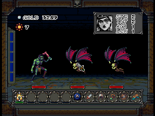
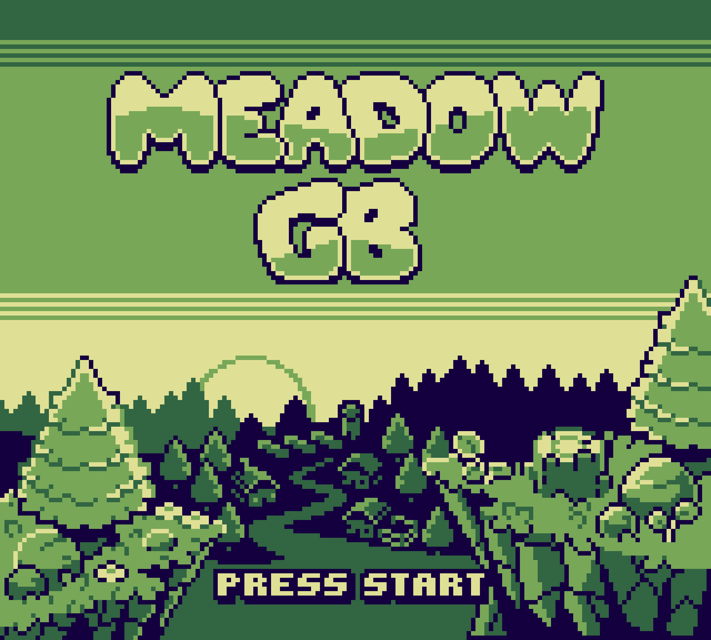
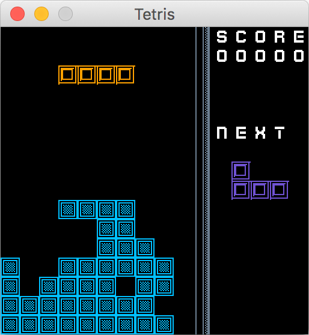
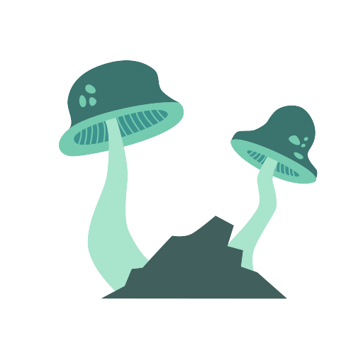
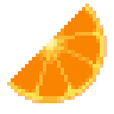

A compilation of tools and techniques for building websites with core browser features.
technologies
- HTML
- CSS
- Javascript
I'm a software engineering professional with a background in functional programming. I've worked in a variety of languages including Clojure λ, Python 🐍 and vanilla JS 🍦. In my free time, I enjoy programming games and listening to records.
A compilation of tools and techniques for building websites with core browser features.
A fast-paced, button mashing, coin collecting dungeon crawler for the N64.

A farming simulator inspired by Harvest Moon, written for the Game Boy. Learn more at

A step-by-step guide for setting up publicly accssible HTMX endpoints using AWS Lambda URLs
A REST API for accessing palettes on colorhunt.co
A web-form for styling Clojure code using cljstyle
Scrapes data from financial websites and then performs algorithmic analysis to determine overall 'health' of a stock. Cooperative project with atosti
Built to demonstrate game development using functional principles. Uses quil for graphics / input handling. Graphics by Kenny.nl

Based on Steve Losh's Caves of Clojure articles. Uses quil for graphics / input handling. The game is currently a playable WIP. Graphics by Kenny.nl

Slices large images into smaller square 'tiles'. The sliced tiles are named, compressed and sent them back to the user as a single file.
